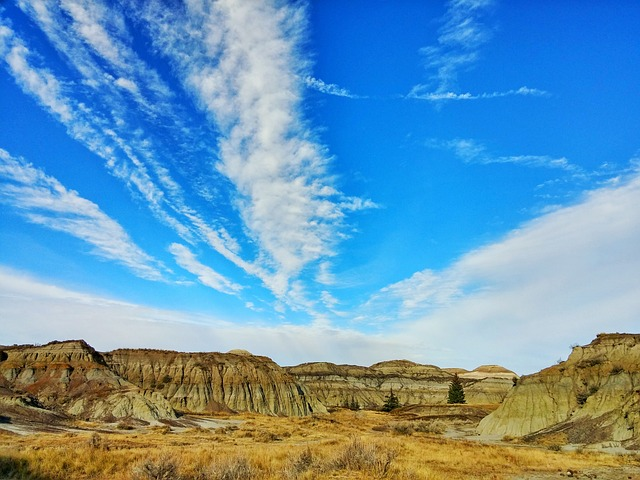
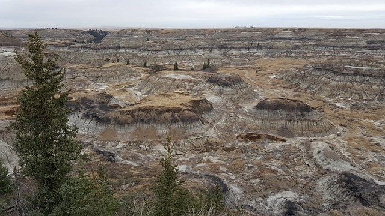
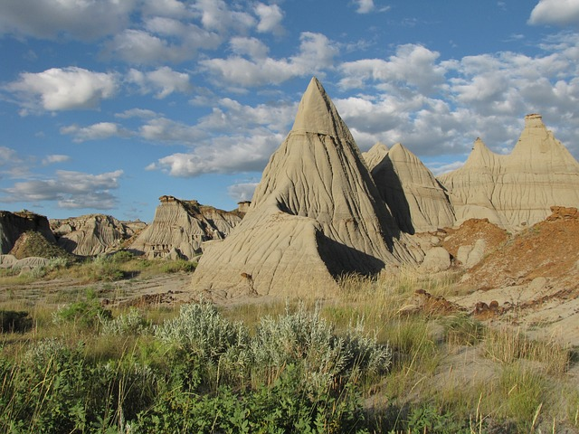
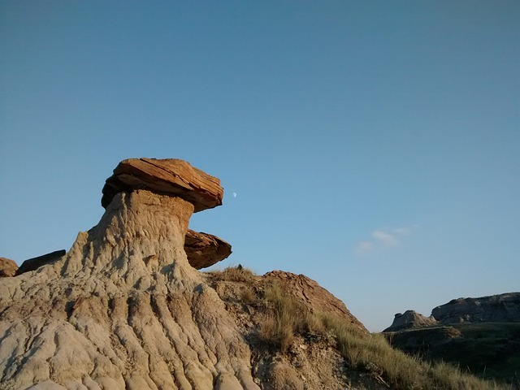

Title: Where Monsters Roamed and Giants Played
The article "Where Monsters Roamed and Giants Played: A Step Back in Time in Southern Alberta"
captures the essence of a nine-day tour with Mile Zero Tours, providing readers with a vivid
glimpse into the region's ancient past and rich cultural heritage. The writer takes us on a
compelling journey, beginning with the Royal Tyrell Museum in Drumheller, an awe-inspiring
repository of dinosaur remains and fossils.

The author skillfully paints a picture of the museum's lively atmosphere, describing the
paleontologists at work and engaging school children in interactive displays. The exploration
continues to the Atlas Coal Mine site, an evocative setting reminiscent of an old Western movie,
where the remnants tell the poignant story of miners' lives in the 1930s.
Moving southeast to the Red Rock Coulee Natural Area, the article delicately hints at the
location's allure without revealing specifics, leaving an air of mystery. The description of
massive, rusty-red round boulders scattered across the landscape, dating back millions of years,
“It’s as if giants abandoned a game of marbles,”.
The writer skillfully captures the diverse landscapes during short drives between sites, from
dramatic Badlands to prairies with canola fields, wind turbines, and oil pumps. The transition
to Waterton National Park in the Rocky Mountains is portrayed as a charming and uncrowded haven,
with the Prince of Wales Hotel providing a fairy tale setting overlooking Waterton Lake.
Noteworthy stops include the Head-Smashed-In Buffalo Jump, illustrating the history of Great
Plains buffalo culture, and the Frank Slide Interpretive Centre, where Canada's deadliest
rockslide is commemorated. The article cleverly avoids revealing the fate of those trapped
underground in the 1903 rockslide, maintaining an element of suspense.
The tour concludes at the Blackfoot Crossing Historical Park, where the Blackfoot signed a
historic treaty in 1877. The author beautifully describes the museum's architectural beauty and
the diverse group of guests, highlighting a celebration of Indigenous culture through dance,
song, and a communal lunch.

Overall, "Where Monsters Roamed and Giants Played" is a well-crafted narrative that transports
readers through time and space, providing a rich tapestry of Alberta's cultural and historical
heritage. The writer's attention to detail, engaging descriptions, and respect for the mysteries
of the past make this article a delightful and informative read.
Click here to read the Article


 Image by
Image by  Image by
Image by  Image by
Image by  Image by
Image by